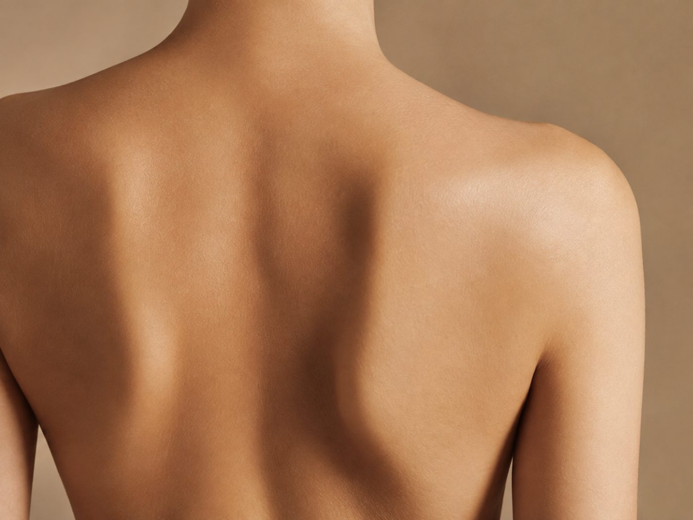

背中のはみ肉
背中の段差は、
肉だけが原因ではない。
ドレスの試着で、背中のブラの上あたりに段差ができる。気にする人は多いのですが、原因は1つではありません。

先に結論です。背中の段差は、下着のサイズ・姿勢・脂肪・むくみが重なって出ることが多いです。下着の見直しで変わる場合もあるので、まずそこから確認してください。
原因の見分け方
| 原因 | 確認の仕方 | 見直すこと | 目安の期間 |
|---|---|---|---|
| 下着のサイズ・位置 | 普段のブラのアンダーが食い込んでいないか | 採寸し直す。ドレス用インナーを試着で確認 | すぐ |
| 姿勢 | 横から見て肩が前に出ていないか | 肩甲骨を寄せる習慣 | 2〜3週 |
| むくみ | 夕方になると段差が強くなる | 塩分を控える、こまめに動く | 数日 |
| 背中の脂肪 | つまむと厚みがある | 食事と全身の運動 | 3ヶ月〜 |
期間は一般的な目安です。
背中は自分で見えない
背中は鏡でも確認しにくい場所です。スマホで後ろ姿を撮るか、合わせ鏡で見てください。試着のときにスタッフに撮ってもらうのも確実です。
自宅でできる背中の運動
| 種目 | やり方 | 回数の目安 |
|---|---|---|
| 肩甲骨寄せ | 両手を後ろで組み、胸を開いて肩甲骨を寄せる | 20秒×2 |
| タオルラットプル | タオルの両端を持って頭上に上げ、首の後ろへ引き下ろす | 10回×2 |
| キャット＆カウ | 四つんばいで背中を丸める・反らすをゆっくり繰り返す | 10回 |
腰や肩に痛みがある場合は行わないでください。
 あわせて読みたい巻き肩を直すと、背中と二の腕が変わる姿勢から整える
あわせて読みたい巻き肩を直すと、背中と二の腕が変わる姿勢から整える
時間が限られているとき
式まで時間が少ない場合は、背中のコースがあるブライダルエステで整える方法もあります。体験から試せるところを選んでください。
体の状態には個人差があります。ここに書いた期間や変化は一般的な目安で、効果を保証するものではありません。痛みや持病がある場合は、無理をせず医師に相談してください。